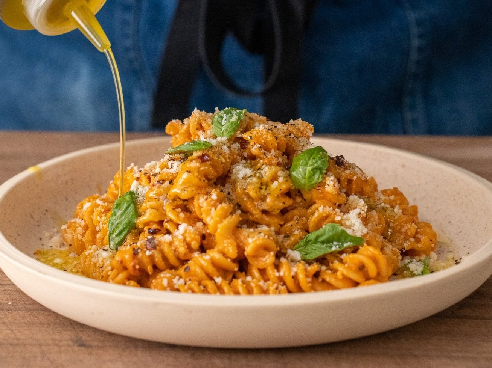

Pasta alla Vodka

Ingredients (Makes 4 Portions)
- 20g or 5-6 cloves garlic, minced
- 75g or 3-4 shallots, minced
- Olive oil
- Salt
- 2-3g or 1.5tsp chile flake
- 170g or 1 small can tomato paste
- 100mL or just under 1/2c vodka (sub in white wine if you
don't have vodka on hand)
- 350g or 1.5c heavy cream (if you don't have cream on hand,
use evaporated milk and additional butter and parmesan
- 60-100g or 2-4oz pasta water
- 500g or 1lb fusilli or pasta of choice
- 75g or 5Tbsp butter
- 50-75g or 1.5c grated aged parmesan
Instructions:
- Preheat large, heavy-bottomed pot over medium. Add 40g or
1/4c olive oil to the heavy bottomed pot, followed by
shallots, garlic, and a pinch of salt. Stir and sweat for
1-2 minutes.
- When translucent, add chile flake and calabrian chiles.
Stir to bloom for about a minute.
- Add tomato paste, stir and fry off raw flavor for about 2
minutes, stirring frequently.
- Add vodka. Stir and cook off alcohol.
- Once thickened and vodka has mostly evaporated, add cream.
Reduce heat to low and stir in hot water.
- Bring large pot of water to a boil.
- When pot of water is boiling, add two large handfuls of
salt followed by pasta.
- Stir and cook to al dente, somewhere around 8-10min.
- When done, drain water from pasta, reserving 1-2 cups
to adjust vodka sauce consistency if needed.
- Add drained pasta to vodka sauce, followed by butter and
around 1/2c or 120g pasta cooking liquid. Gently stir to
melt butter and combine.
- Once butter is melted in, add an additional 1/2c pasta
cooking liquid followed by parm.
- Remove from heat and stir to combine. If needed, adjust
sauce consistency by adding more pasta water to thin it out
or more cheese and/or butter to thicken sauce.
- Taste for seasoning and add salt if needed. Plate up and
garnish with a sprinkle of parm, black pepper, a sprinkle of
chile flakes, a drizzle of olive oil, and fresh basil if you
have it.